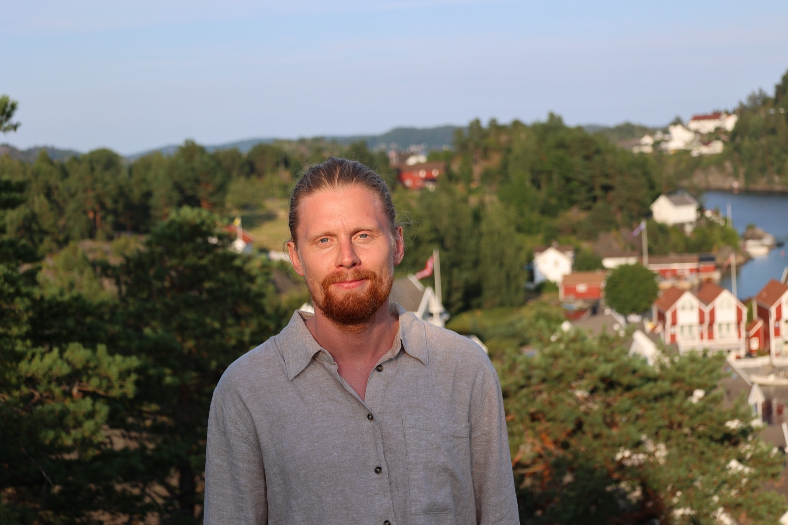
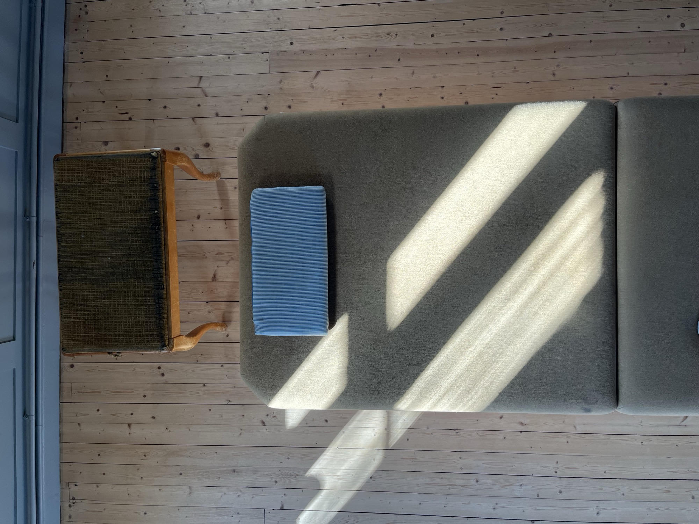
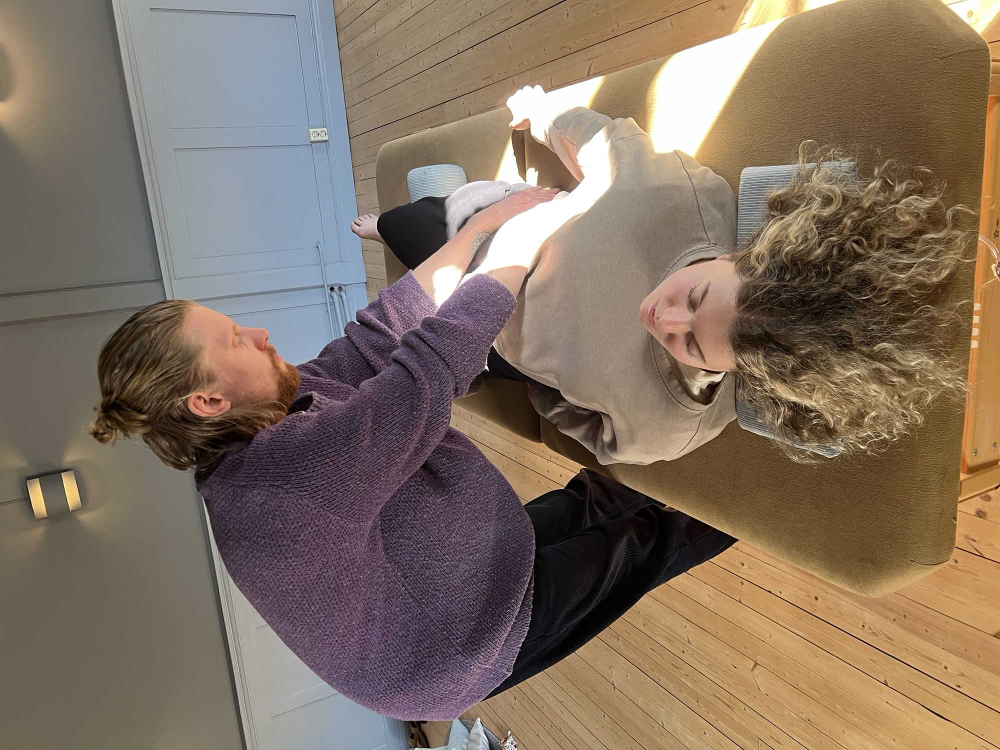
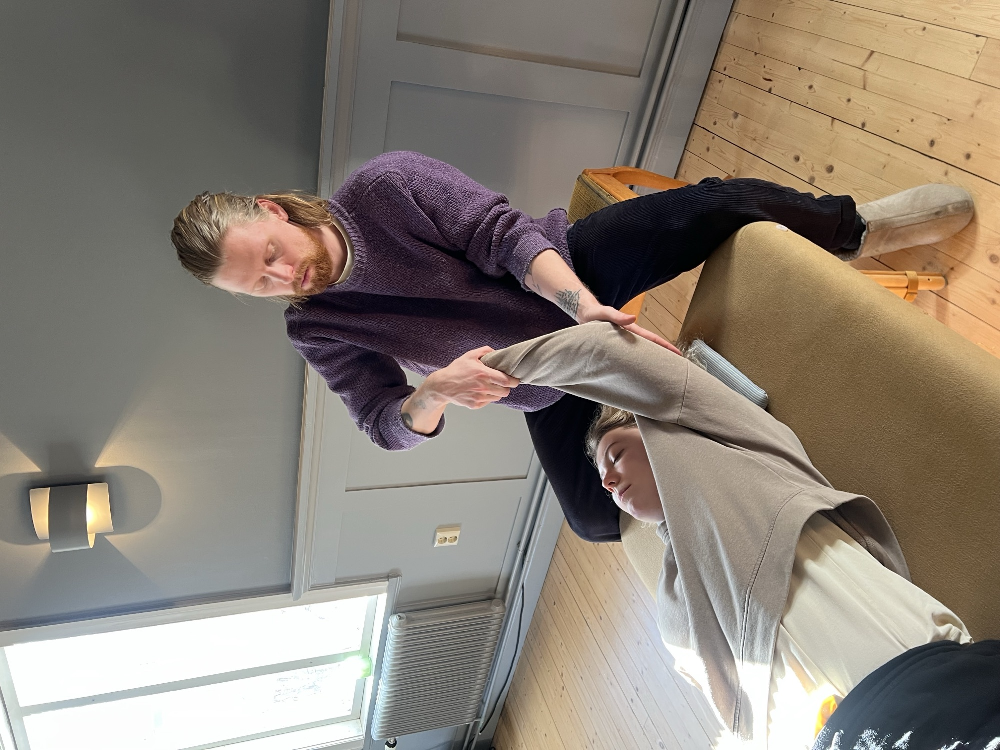
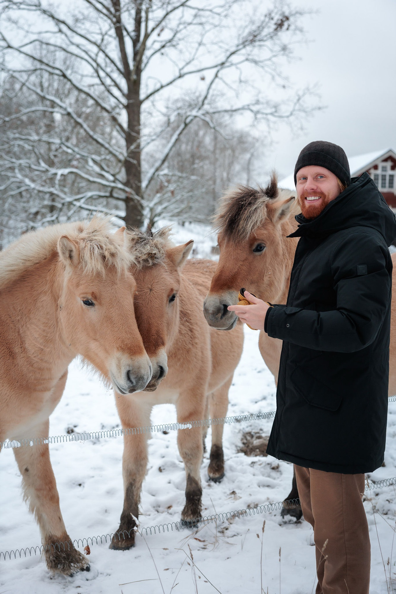

Så att du kan möta livet med större frihet och ro.
Nervsystemsbaserad terapi · JärnaMånga av oss bär på långvarig stress, spänning eller en känsla av att aldrig riktigt landa – utan att förstå varför. Ofta handlar det om att nervsystemet fastnat i gamla mönster, något som varken viljan eller tankekraften ensam kan förändra.
Jag arbetar med två skonsamma, kroppsbaserade metoder som båda utgår från nervsystemets naturliga förmåga att lära sig och förändras. De kompletterar varandra väl och kan kombineras utifrån dina behov och önskemål.
Du behöver inte göra något speciellt eller prestera. Vi börjar där du är och du är alltid fullt påklädd. I en Transforming Touch®-session ligger du bekvämt medan jag erbjuder lätt beröring. I Feldenkrais® utforskar vi enkla rörelser tillsammans i din egen takt. Det viktigaste är att du känner dig trygg.

En skonsam, regleringsfokuserad beröringsterapi som ger nervsystemet direkt tillgång till trygghet via kroppen. Utvecklad av Dr. Stephen Terrell för att möta stress, oro och mönster som formats tidigt i livet och som samtalet sällan når.
Du vilar fullt påklädd på en behandlingsbänk medan jag erbjuder lätt, stilla beröring. Nervsystemet får ta emot ett tryggt stöd – och lär sig, session för session, att landa.
Jag håller lätt och stilla på punkter på kroppen
Nervsystemsreglering, trygghet och ro
Stress, trauma, anknytning och svårighet att landa

En utforskande rörelsepedagogik som lär upp nervsystemet inifrån genom långsamma rörelser och varsam uppmärksamhet. Istället för att rätta eller anstränga får hjärnan ny information, och gamla spännings- och rörelsemönster kan släppa.
Du ligger fullt påklädd på en behandlingsbänk medan jag varsamt rör och guidar kroppen i din takt. Många reser sig med en omedelbar känsla av lätthet – längre, mjukare, friare.
Jag gör olika utforskanden och rörelser av kroppen
Nervsystemsreglering, kroppskännedom och lätthet
Smärta, stelhet och önskan att röra sig friare
Gruppkvällar där du får uppleva metoderna i ett mindre sammanhang. En timme skonsam rörelse med Feldenkrais®-rörelsesession + en timme djup, stödjande beröring med Transforming Touch®.
Kortfattade förklaringar av centrala begrepp som hjälper dig förstå det vi arbetar med.
Hjärnan förändras hela livet. Varje gång vi upplever något nytt – en rörelse, en känsla av trygghet, ett ögonblick av ro – skapas nya kopplingar. Det är detta som gör förändring möjlig, oavsett ålder.
Uppstår när vi som barn inte fick tillräckligt konsekvent trygghet, närvaro eller omsorg. Det behöver inte handla om dramatiska händelser – frånvaro räcker. Nervsystemet lär sig tidigt att världen är osäker, och det mönstret bär vi ofta med oss in i vuxenlivet.
Nervsystemet styr hur vi svarar på stress, kontakt och vila. När det är reglerat känner vi oss trygga, närvarande och kapabla. Reglering betyder inte att aldrig bli påverkad, utan att kunna återhämta sig.
Somatisk betyder kroppsbaserad. Somatiska metoder utgår från att kroppen bär på upplevelser och mönster som inte alltid nås genom samtal eller tanke. Genom rörelse, beröring och närvaro skapar vi tillgång till dessa lager – och möjlighet till förändring.

Känner att stress, spänning eller oro sitter i kroppen snarare än går att tänka bort
Har varit i samtalsterapi men vill komplettera med något kroppsbaserat
Återhämtar dig från utmattning, trauma eller långvarig smärta
Vill röra dig och leva med större lätthet i vardagen
Söker ett tryggt, respektfullt och icke-dömande sammanhang
Vill hitta tillbaka till dig själv – till din egen känsla av trygghet och kapacitet
Många organisationer investerar i kost, träning och ergonomi. Färre arbetar med det system som avgör hur människor faktiskt mår och fungerar tillsammans: nervsystemet. Jag erbjuder återkommande kroppsbaserat arbete på plats hos er – individuellt och i grupp.
Det är först när vi känner oss trygga som vi kan vara öppna – för livet, för varandra och för det vi ännu inte vet. Kreativitet, omdöme, mod att säga det obekväma och passion för arbetet vilar alla på en känsla av trygghet i kroppen.
När kroppen är i beredskapsläge prioriterar den överlevnad, inte nytänkande. Det syns som försiktighet, konflikträdsla, stela samarbeten och en effektivitet som saknar riktning – långt innan någon blir sjukskriven.
Insikter, policys och goda intentioner når inte alltid dit. Kroppsbaserat arbete går direkt på det som orden inte når – och ger nervsystemet en konkret upplevelse av att det går att landa.
Reglering är inget man antingen har eller saknar, utan något nervsystemet kan lära sig. Därför ger återkommande arbete över tid betydligt mer än en enstaka insats.
Vi utgår från hur er vardag ser ut. Det vanligaste är att jag finns på plats en återkommande dag – varje vecka eller varannan – så att arbetet blir en del av rytmen och inte ett enskilt event.
Individuella sessioner som medarbetarna bokar själva, i ett lugnt rum hos er. Transforming Touch® eller Feldenkrais® utifrån vad personen behöver.
Feldenkrais® i grupp – långsamma, enkla rörelser som lär upp nervsystemet inifrån. Många reser sig lättare, mjukare och tydligare i huvudet.
”Nervsystemet på jobbet” – om varför trygghet föregår kreativitet, vad stress gör med en organisation och hur återhämtning faktiskt går till. Med praktiska övningar.
Jag är utbildad ingenjör och har arbetat många år inom managementkonsulting och snabbväxande bolag – jag känner den miljön inifrån. Upplägg och pris sätter vi utifrån omfattning. Berätta hur det ser ut hos er, så föreslår jag något som passar.

Under flera år levde jag ett liv som såg framgångsrikt ut på utsidan – karriär inom managementkonsulting och snabbväxande bolag, högt tempo och ständig tillgänglighet. Men under ytan bar jag på djup ångest och ett mönster i relationer som jag inte förstod. Tillslut insåg jag att det inte var ett värdigt liv. Det var hösten 2021 som något förändrades.
Det som följde var en av de mest omvälvande perioderna i mitt liv. Jag påbörjade terapi med fokus på anknytningstrauma. Mentorer och människor som visade vägen. Och gradvis en hel livsstilsomställning – hur jag jobbar, var jag bor, vilka relationer jag väljer, hur jag tar hand om min kropp. Jag har provat många olika terapiformer och kroppsbaserade metoder: gestaltterapi, Rolfing, Somatic Experiencing, A.R.T., NARM, Feldenkrais och Transforming Touch®. Det är ur den resan det här arbetet vuxit fram.
Jag möter dig med en uppriktig förståelse för hur det känns att bära på mönster som kroppen ännu inte fått bearbeta – och en genuin övertygelse om att förändring är möjlig. Du behöver inte veta vägen. Det räcker att du är redo att börja.